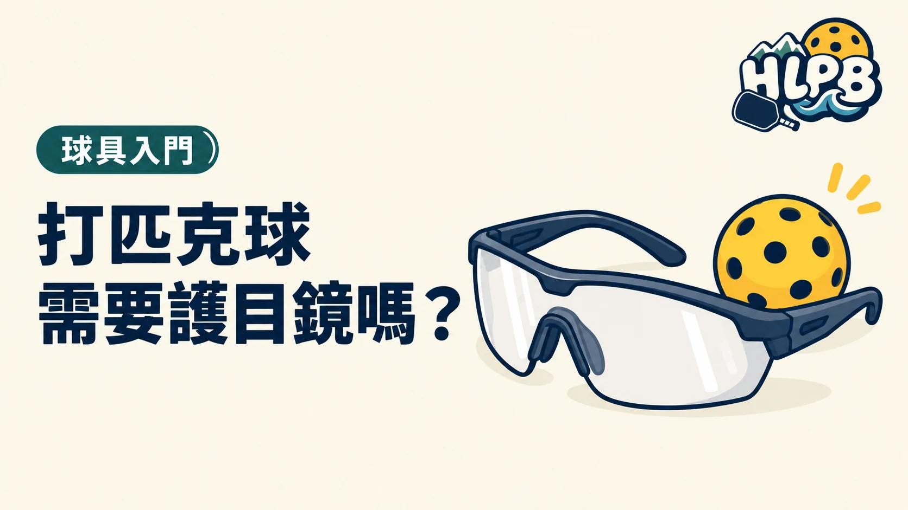

為什麼有人會戴？
近距離對打時，球或球拍可能靠近臉部。USA Pickleball 建議球員使用適當的眼部防護。這是降低風險的裝備，不保證完全避免受傷。
挑選時看三件事
- 防護：確認產品有清楚的抗衝擊防護標示與適用說明，不要把一般太陽眼鏡直接當成運動護目鏡。
- 視線：鏡片清楚，左右與上方視野不被明顯擋住。
- 配戴：跑動或低頭時不易滑落，也不會壓得不舒服。
若平時戴近視眼鏡，可詢問眼鏡專業人員適合自己的運動防護方案。更多裝備概念可看球具指南。
一般眼鏡、太陽眼鏡與運動護目鏡，別只看外型
購買時直接核對產品的運動用途、防護與抗衝擊標示，以及原廠提供的適用說明。透明鏡片不代表具備運動防護，寫防曬也不等於已說明球類運動適用性。資料不足時，向製造商或眼鏡專業人員詢問，比只看賣場名稱可靠。
| 比較項目 | 試戴或詢問重點 |
|---|---|
| 用途與標示 | 是否清楚說明適用運動與防護資訊 |
| 視野 | 左右及上方觀看是否受框體明顯遮擋 |
| 固定與貼合 | 低頭、轉頭及移動時是否穩定 |
| 視力需求 | 近視矯正方案是否能與防護設計配合 |
| 保養與更換 | 清潔方法、鏡片刮損及受撞後如何處理 |
有近視，選購時把需求一起說清楚
先確認自己平常使用眼鏡或隱形眼鏡的方式，再請專業人員說明可行的運動防護配置。不要自行假設一般眼鏡外面再加一副，就一定能維持正確貼合；應按各產品設計實際試戴。
買好之後，別忽略日常檢查
依原廠方式清潔與收納，使用前確認鏡片視線及固定配件狀態。有明顯損傷或受撞疑慮，按製造商指示處理。本文整理的是用品選購檢查，不指定個人的醫療或視力方案。
最後查證：2026-10-19｜資料來源：USA Pickleball 健康與安全；EyeWiki 眼部傷害預防
返回文章列表